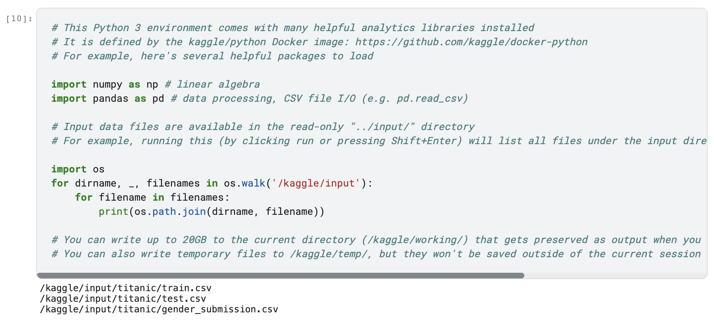
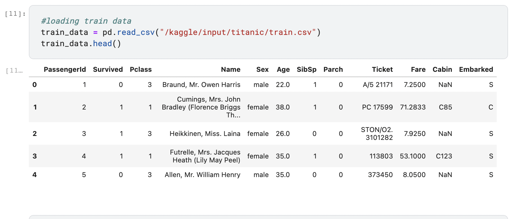
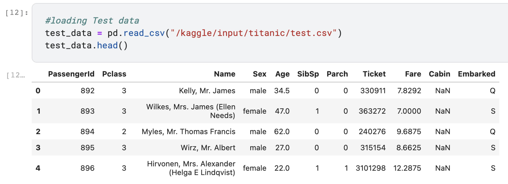
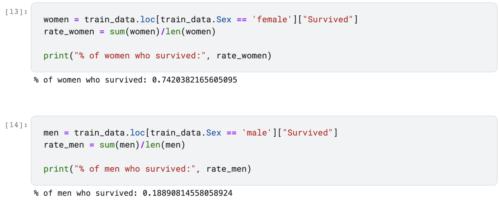
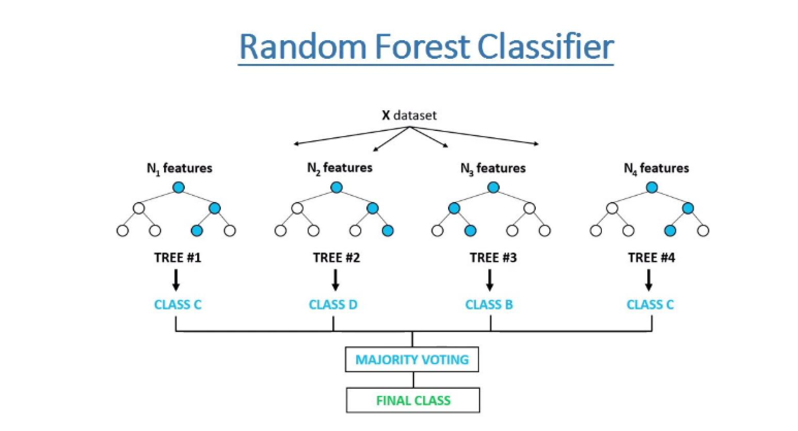
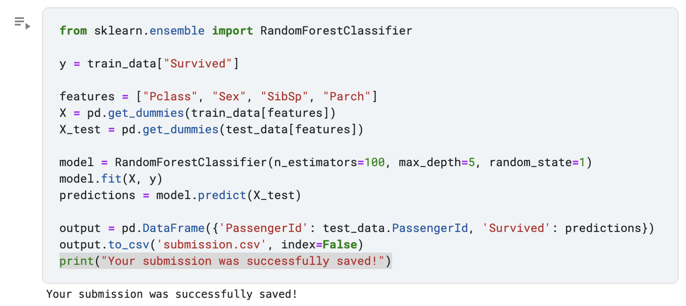
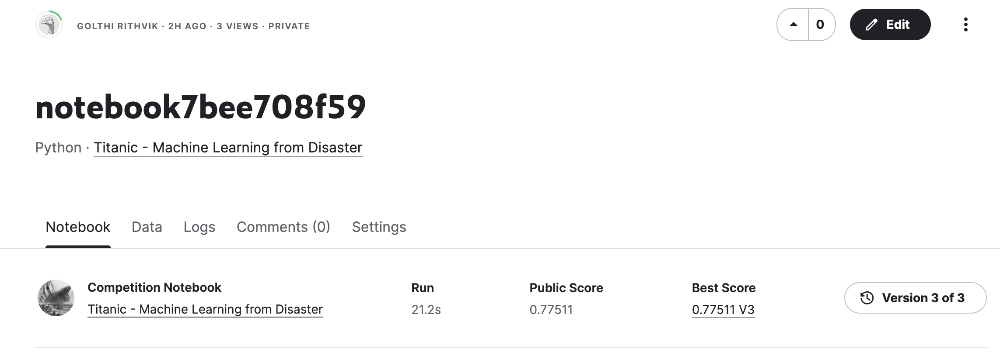

History
The sinking of the Titanic is one of the most infamous shipwrecks in history.
On April 15, 1912, during her maiden voyage, the widely considered “unsinkable” RMS Titanic sank after colliding with an iceberg. Unfortunately, there weren’t enough lifeboats for everyone onboard, resulting in the death of 1502 out of 2224 passengers and crew.
Getting Started
So In this blog I have built a predictive model for the “Titanic - Machine Learning from Disaster” challenge from kaggle. In this challenge I have used the Titanic passenger data (name, age, price of ticket, etc) to try to predict who will survive and who will die.
Dataset
I have used python3 to implement the model.I first downloaded the dataset from kaggle and placed it in the above locations. The below code snippet is printing the locations of the train, test and gender_submission csv files.
Initially, the training data and testing data are loaded. And using the head() function we can display the first 5 entries of the data.
 Survival percentages
To get an estimate of what percentage of men and women have survived, we can make use of the “Survived” attribute and calculate the respective survived percentages as shown in the below code snippet.
Random Forest Classifier
Random forest classifier creates a set of decision trees from randomly selected subset of training set. It then aggregates the votes from different decision trees to decide the final class of the test object.
Training the Model
We will be using the Random Forest Classifier to train our model on the training data. After the model is trained, the model is then tested using the test data.The final predictions are stored into submission.csv.
Submission Score
The Final score at kaggle after submission was 0.77511.
